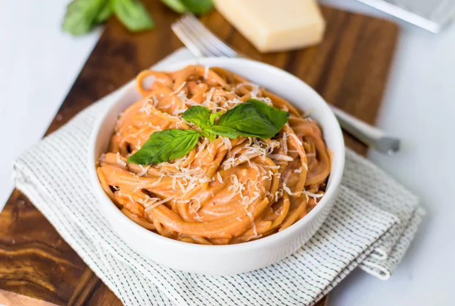

Creamy Tomato Pasta

Description
Creamy tomato pasta is an easy main dish recipe.
It's an excellent use for cream cheese, simply combining
it with a classic tomato sauce and spaghetti. It may sound
a little unusual to add cream cheese to a pasta recipe,
but it adds a tangy note and rich creaminess to the sauce. You
can also add extra seasonings and other ingredients to the
base recipe to fit your personal taste.
This creamy spaghetti is pure comfort food and a delicious meat-free weeknight
dinner. It's also a great choice for a last-minute dinner party when served with
toasted garlic bread, a crisp green salad, and rosé or red wine. The recipe makes
a large batch of pasta, and it's likely that you'll have leftovers for lunch
or another night's side.
Ingredients
- Kosher salt
- 1 tablespoon unsalted butter
- 2 tablespoons olive oil
- 1 medium coarsely chopped onion
- 1 (26-ounce) jar tomato pasta sauce, or homemade tomato sauce
- 3 tablespoons water
- 1 (15-ounce) can diced tomatoes, undrained
- 1 pound spaghetti or fettuccine
- 1 (8-ounce) package cream cheese, cubed
- Freshly ground black pepper, to taste
Steps
- Gather the ingredients.
- Bring a large pot of well-salted water to a boil.
- Meanwhile, heat the butter and olive oil in a large skillet over medium heat.
Add the onion. Cook, stirring often until the onion is tender
and just starts to brown around the edges, 5 to 6 minutes.
- Add the pasta sauce to the onion mixture. Add the water to the empty jar,
close and shake to loosen the rest of the pasta sauce. Add to the skillet
with the canned tomatoes. Lower the heat to a simmer, stirring frequently,
so the mixture doesn't burn on the bottom.
- Meanwhile, cook the spaghetti in the large pot of boiling water
according to the package directions until al dente.
- A few minutes before the spaghetti is done, add the cream cheese to the pasta sauce.
Whisk continuously until the cheese melts and the sauce is creamy.
The cream cheese may not dissolve completely in the sauce because the sauce is
acidic, but that's OK. It will add the desired creamy texture and flavor.
- Drain the pasta and immediately add to the skillet with the sauce.
- Toss to coat, adjust the seasoning with salt and pepper, then serve.